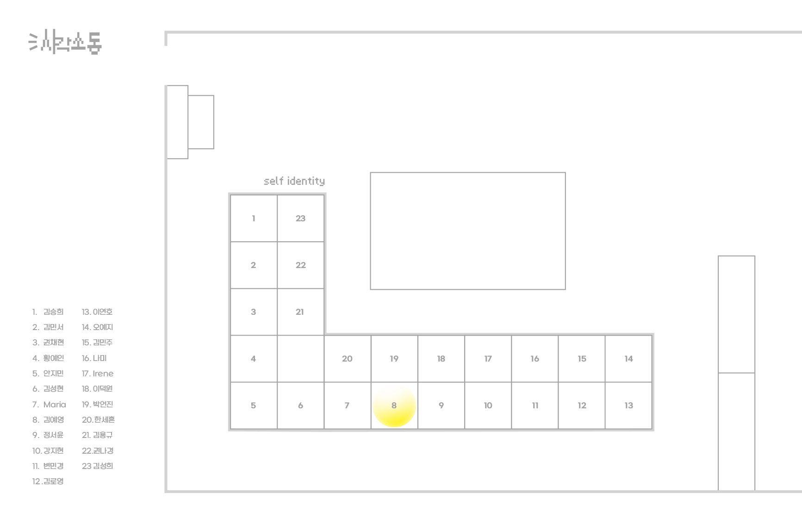

MAPPING YOUR TIME
VD1
시간의 비밀 지도
실제 객관적이고 물리적인 나의 시간 속도에 대한 지도와 내가 주관적으로 느끼는 시간 속도가 그려진 시간의 비밀 지도를 트레이싱지를 사용하여 수작업으로 제작했다.
SHAPE POSTER
VD1
Evolution!
점을 이으면 선이 되고, 선을 이으면 면이 된다는 원의 정보를 점 잇기 컬러링북 형식을 사용하여 포스터를 디자인했다.
BOUND BOOK OF SCRAPS
VD1
대화의 책
여러가지 형태와 종류의 말풍선을 수집한 후, 하나의 대화를 랜덤하게 구성해 볼 수 있는 책을 제작했다.
MINIMALISM POSTER
VD1
The sticky prison
끈끈이 주걱의 끈끈한 점액을 키워드로 미니멀 포스터를 제작했다.
MAXIMALISM POSTER
VD1
끈끈이 주걱의 점액에 갇혀 점점 머리속 생각이 어지러워지는 곤충의 관점을 표현한 맥시멀 포스터를 디자인했다.
GENERATIVE SYSTEM
VD1
미래 습관 쎈-타
끈끈이 주걱이 곤충을 유인하고 빠져나가지 못하도록 가두는 특성과, 사람이 습관을 고치지 못하고 빠져나가지 못하는 특성을 연결한 안좋은 습관 장려 시스템을 제작했다.
5 PATTERN POSTERS
VD2
나를 표현할 수 있는 5가지의 문구를 상징하는 패턴 포스터를 제작했다.
SELF IDENTITY
VD2
이 위치로 직접 가서 확인해보세요!
